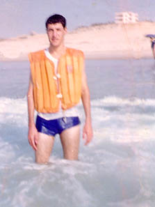

PERSONAL STORIES
"Having Spent His Life for Others"
Bassil Ibrahim Hussein Na'im, aged 27 years, Beit Hanoun, Gaza Strip
Right: Bassil
Bassil was born in 1969 and grew up in the village of Beit Hanoun in a large family of ten brothers and four sisters. His family and friends remember him as a kind, easy-going and intelligent man.
He went to school in the village and was always one of the best students. During the Intifada the Israeli occupation forces closed the school and forced all the students to go and study in the Al-Falujah school in Jabalya refugee camp. Because of the distance from the village, most of the students from Beit Hanoun eventually dropped out of their classes. However Bassil was determined to finish and he did so very successfully.
After completing school he went to study nursing in the Al Houkama' College in Gaza. When he graduated he went to work at Al Shifa' Hospital in Gaza. Hospital staff remember his ability to bring the hospital personnel together. This hospital staff remember that their community was filled with more love and closeness than any family. Patients whom he cared for in the hospital kept in contact with him even after they left, often visiting his house.
Bassil married a girl from the same village and had two children, a boy, Mohammed, and a girl, Malaak ("Angel"). His third child, Bassil, born 5 months after his death, will never see his father.
Bassil was always disturbed by suffering. Whether it was a child in pain, an injured youth, or a sick elderly person, he always was the first to help. Whenever there were clashes he volunteered to work in the ambulance, helping those injured. During the Intifada he used to treat the injured outside the hospital because of the danger of Israeli soldiers arresting people at the hospital. This put Bassil himself in danger and he lived with this constant threat.
Right: Bassil at the beach.
Although he was very busy with his work and his own family, he kept in contact with his brothers, sisters and parents. Whenever he found time he would visit them and suggest they go on a picnic to the beach - the only available place for Gazans to go and relax.
His elder brother by 4 years, Kamal, remembers once going home angry with Bassil after an argument. Bassil couldn't sleep that night and he appeared at his brother's place after midnight apologizing and crying, leaving nothing for Kamal to do except hug him.
Bassil was very proud of his car and never stopped saying how it could handle any problems on the road. Two of his brothers, Iyad and 'Imad, recall being in the car with Bassil one time. On the way back home the car fell into a very small pothole and the two right wheels were punctured with a very loud noise. They got out of the car, laughing at Bassil, telling him how his wonderful car couldn't handle the smallest hole!
On the Thursday 26 September 1996, Bassil was working in an ambulance during the clashes. As usual he was one of the first at the site to give medical aid. He arrived at Erez border area and gave assistance to a Palestinian worker who had been shot in the head. He took him to the hospital and returned to Erez. Next, he helped a child, Tamir Al Masri, who was in a serious condition and died in hospital three days later.
Israeli soldiers were shooting at the ambulances and one driver was injured. Bassil saw an injured boy lying on the ground whom other medical personnel could not reach due to the heavy firing. With no thought for his own safety, Bassil jumped from the ambulance and ran over to the boy to help. There, he found him already dead. As he lifted him to take him to the ambulance, Bassil's white coat soaking up the boy's blood, a bullet from an Israeli sniper standing 15 metres away hit him in the heart and exited through his back. Bassil died instantly, having spent his life for others.
Back to PERSONAL STORIES or on to the NEXT STORY